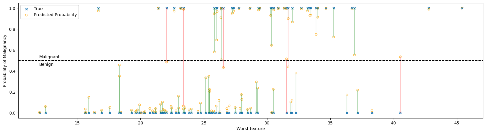
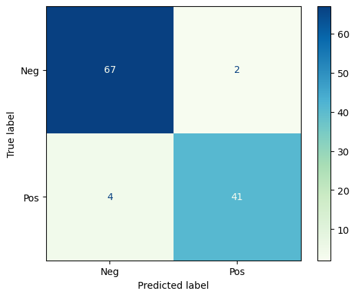
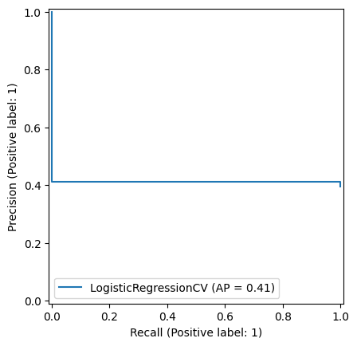

7. Classification#
7.1. Binary classification with Logistic Regression#
In the following example, we’ll use Logistic Regression (we’ll go into detail about this algorithm in the next lecture) to classify breast tumors as malignant or benign based on the physical properties of the tumor (e.g. size, shape, texture).
import matplotlib.pyplot as plt
import seaborn as sns
import numpy as np
from sklearn.datasets import load_breast_cancer
from sklearn.preprocessing import StandardScaler
from sklearn.model_selection import train_test_split
from sklearn.linear_model import LogisticRegressionCV
# Load the breast cancer dataset
bc_df, y = load_breast_cancer(return_X_y=True, as_frame=True)
# We'll uncomment the line below the second time through
# bc_df = bc_df[['worst texture']]
# The original dataset maps 0=malignant, 1=benign. This feels backwards to me, so I swap 0 and 1
y = 1-y
display(bc_df.describe())
display(y.describe())
| mean radius | mean texture | mean perimeter | mean area | mean smoothness | mean compactness | mean concavity | mean concave points | mean symmetry | mean fractal dimension | ... | worst radius | worst texture | worst perimeter | worst area | worst smoothness | worst compactness | worst concavity | worst concave points | worst symmetry | worst fractal dimension | |
|---|---|---|---|---|---|---|---|---|---|---|---|---|---|---|---|---|---|---|---|---|---|
| count | 569.000000 | 569.000000 | 569.000000 | 569.000000 | 569.000000 | 569.000000 | 569.000000 | 569.000000 | 569.000000 | 569.000000 | ... | 569.000000 | 569.000000 | 569.000000 | 569.000000 | 569.000000 | 569.000000 | 569.000000 | 569.000000 | 569.000000 | 569.000000 |
| mean | 14.127292 | 19.289649 | 91.969033 | 654.889104 | 0.096360 | 0.104341 | 0.088799 | 0.048919 | 0.181162 | 0.062798 | ... | 16.269190 | 25.677223 | 107.261213 | 880.583128 | 0.132369 | 0.254265 | 0.272188 | 0.114606 | 0.290076 | 0.083946 |
| std | 3.524049 | 4.301036 | 24.298981 | 351.914129 | 0.014064 | 0.052813 | 0.079720 | 0.038803 | 0.027414 | 0.007060 | ... | 4.833242 | 6.146258 | 33.602542 | 569.356993 | 0.022832 | 0.157336 | 0.208624 | 0.065732 | 0.061867 | 0.018061 |
| min | 6.981000 | 9.710000 | 43.790000 | 143.500000 | 0.052630 | 0.019380 | 0.000000 | 0.000000 | 0.106000 | 0.049960 | ... | 7.930000 | 12.020000 | 50.410000 | 185.200000 | 0.071170 | 0.027290 | 0.000000 | 0.000000 | 0.156500 | 0.055040 |
| 25% | 11.700000 | 16.170000 | 75.170000 | 420.300000 | 0.086370 | 0.064920 | 0.029560 | 0.020310 | 0.161900 | 0.057700 | ... | 13.010000 | 21.080000 | 84.110000 | 515.300000 | 0.116600 | 0.147200 | 0.114500 | 0.064930 | 0.250400 | 0.071460 |
| 50% | 13.370000 | 18.840000 | 86.240000 | 551.100000 | 0.095870 | 0.092630 | 0.061540 | 0.033500 | 0.179200 | 0.061540 | ... | 14.970000 | 25.410000 | 97.660000 | 686.500000 | 0.131300 | 0.211900 | 0.226700 | 0.099930 | 0.282200 | 0.080040 |
| 75% | 15.780000 | 21.800000 | 104.100000 | 782.700000 | 0.105300 | 0.130400 | 0.130700 | 0.074000 | 0.195700 | 0.066120 | ... | 18.790000 | 29.720000 | 125.400000 | 1084.000000 | 0.146000 | 0.339100 | 0.382900 | 0.161400 | 0.317900 | 0.092080 |
| max | 28.110000 | 39.280000 | 188.500000 | 2501.000000 | 0.163400 | 0.345400 | 0.426800 | 0.201200 | 0.304000 | 0.097440 | ... | 36.040000 | 49.540000 | 251.200000 | 4254.000000 | 0.222600 | 1.058000 | 1.252000 | 0.291000 | 0.663800 | 0.207500 |
8 rows × 30 columns
count 569.000000
mean 0.372583
std 0.483918
min 0.000000
25% 0.000000
50% 0.000000
75% 1.000000
max 1.000000
Name: target, dtype: float64
First, we prepare the data.
Notice that the numerical values of the features range from numbers in the 1000s down to numbers less than 1. It will be important to scale the features.
X_train, X_test, y_train, y_test = train_test_split(bc_df, y, test_size= 0.2)
sc = StandardScaler()
Z_train = sc.fit_transform(X_train)
Z_test = sc.transform(X_test)
Now we create and fit the model.
Cs = np.logspace(-3, 3, 25)
logreg = LogisticRegressionCV(Cs = Cs, penalty = 'l1',
solver = 'liblinear',
max_iter = 1000)
logreg.fit(Z_train, y_train)
LogisticRegressionCV(Cs=array([1.00000000e-03, 1.77827941e-03, 3.16227766e-03, 5.62341325e-03,
1.00000000e-02, 1.77827941e-02, 3.16227766e-02, 5.62341325e-02,
1.00000000e-01, 1.77827941e-01, 3.16227766e-01, 5.62341325e-01,
1.00000000e+00, 1.77827941e+00, 3.16227766e+00, 5.62341325e+00,
1.00000000e+01, 1.77827941e+01, 3.16227766e+01, 5.62341325e+01,
1.00000000e+02, 1.77827941e+02, 3.16227766e+02, 5.62341325e+02,
1.00000000e+03]),
max_iter=1000, penalty='l1', solver='liblinear')In a Jupyter environment, please rerun this cell to show the HTML representation or trust the notebook. On GitHub, the HTML representation is unable to render, please try loading this page with nbviewer.org.
Parameters
| Cs | array([1.0000...00000000e+03]) | |
| fit_intercept | True | |
| cv | None | |
| dual | False | |
| penalty | 'l1' | |
| scoring | None | |
| solver | 'liblinear' | |
| tol | 0.0001 | |
| max_iter | 1000 | |
| class_weight | None | |
| n_jobs | None | |
| verbose | 0 | |
| refit | True | |
| intercept_scaling | 1.0 | |
| multi_class | 'deprecated' | |
| random_state | None | |
| l1_ratios | None |
logreg.__dict__
{'Cs': array([1.00000000e-03, 1.77827941e-03, 3.16227766e-03, 5.62341325e-03,
1.00000000e-02, 1.77827941e-02, 3.16227766e-02, 5.62341325e-02,
1.00000000e-01, 1.77827941e-01, 3.16227766e-01, 5.62341325e-01,
1.00000000e+00, 1.77827941e+00, 3.16227766e+00, 5.62341325e+00,
1.00000000e+01, 1.77827941e+01, 3.16227766e+01, 5.62341325e+01,
1.00000000e+02, 1.77827941e+02, 3.16227766e+02, 5.62341325e+02,
1.00000000e+03]),
'fit_intercept': True,
'cv': None,
'dual': False,
'penalty': 'l1',
'scoring': None,
'tol': 0.0001,
'max_iter': 1000,
'class_weight': None,
'n_jobs': None,
'verbose': 0,
'solver': 'liblinear',
'refit': True,
'intercept_scaling': 1.0,
'multi_class': 'deprecated',
'random_state': None,
'l1_ratios': None,
'n_features_in_': 30,
'classes_': array([0, 1]),
'Cs_': array([1.00000000e-03, 1.77827941e-03, 3.16227766e-03, 5.62341325e-03,
1.00000000e-02, 1.77827941e-02, 3.16227766e-02, 5.62341325e-02,
1.00000000e-01, 1.77827941e-01, 3.16227766e-01, 5.62341325e-01,
1.00000000e+00, 1.77827941e+00, 3.16227766e+00, 5.62341325e+00,
1.00000000e+01, 1.77827941e+01, 3.16227766e+01, 5.62341325e+01,
1.00000000e+02, 1.77827941e+02, 3.16227766e+02, 5.62341325e+02,
1.00000000e+03]),
'n_iter_': array([[[ 0, 0, 0, 0, 11, 18, 16, 17, 15, 13, 14, 11, 13, 15, 15, 16,
18, 20, 24, 23, 23, 22, 24, 23, 23],
[ 0, 0, 0, 0, 11, 12, 9, 11, 14, 22, 14, 12, 12, 18, 16, 18,
21, 21, 27, 23, 26, 28, 27, 23, 31],
[ 0, 0, 0, 0, 17, 16, 11, 10, 12, 11, 11, 11, 15, 15, 18, 21,
19, 26, 23, 23, 24, 21, 25, 27, 27],
[ 0, 0, 0, 0, 17, 11, 10, 10, 10, 15, 11, 15, 16, 15, 14, 18,
19, 16, 22, 21, 20, 23, 21, 20, 23],
[ 0, 0, 0, 0, 12, 23, 11, 13, 14, 11, 16, 13, 14, 17, 15, 14,
19, 18, 22, 19, 17, 20, 18, 20, 20]]], dtype=int32),
'scores_': {np.int64(1): array([[0.63736264, 0.63736264, 0.63736264, 0.63736264, 0.85714286,
0.91208791, 0.96703297, 0.96703297, 0.96703297, 0.96703297,
0.96703297, 0.96703297, 0.96703297, 0.96703297, 0.97802198,
0.97802198, 0.95604396, 0.95604396, 0.95604396, 0.95604396,
0.95604396, 0.96703297, 0.96703297, 0.96703297, 0.96703297],
[0.63736264, 0.63736264, 0.63736264, 0.63736264, 0.96703297,
0.97802198, 0.97802198, 1. , 1. , 1. ,
1. , 1. , 0.98901099, 0.98901099, 0.98901099,
0.98901099, 0.98901099, 0.98901099, 0.98901099, 0.98901099,
0.98901099, 0.98901099, 0.98901099, 0.97802198, 0.97802198],
[0.63736264, 0.63736264, 0.63736264, 0.63736264, 0.92307692,
0.93406593, 0.94505495, 0.96703297, 0.97802198, 0.98901099,
0.98901099, 0.98901099, 0.98901099, 0.98901099, 0.98901099,
1. , 0.98901099, 0.98901099, 0.98901099, 0.97802198,
0.97802198, 0.97802198, 0.96703297, 0.95604396, 0.95604396],
[0.62637363, 0.62637363, 0.62637363, 0.62637363, 0.92307692,
0.91208791, 0.94505495, 0.98901099, 0.98901099, 0.97802198,
0.97802198, 0.97802198, 0.96703297, 0.96703297, 0.95604396,
0.95604396, 0.95604396, 0.95604396, 0.95604396, 0.95604396,
0.95604396, 0.94505495, 0.94505495, 0.94505495, 0.94505495],
[0.62637363, 0.62637363, 0.62637363, 0.62637363, 0.91208791,
0.91208791, 0.93406593, 0.95604396, 0.95604396, 0.95604396,
0.95604396, 0.94505495, 0.94505495, 0.95604396, 0.95604396,
0.92307692, 0.92307692, 0.92307692, 0.92307692, 0.92307692,
0.93406593, 0.93406593, 0.93406593, 0.93406593, 0.93406593]])},
'coefs_paths_': {np.int64(1): array([[[ 0. , 0. , 0. , ..., 0. ,
0. , 0. ],
[ 0. , 0. , 0. , ..., 0. ,
0. , 0. ],
[ 0. , 0. , 0. , ..., 0. ,
0. , 0. ],
...,
[-12.99299131, 0.48110516, -14.51324021, ..., 3.45745956,
10.46237055, 3.00653309],
[-14.62291445, 1.38549194, -14.60882855, ..., 3.94091942,
10.46903453, 3.48770569],
[-16.09651966, 2.07755678, -16.33771805, ..., 3.64760833,
10.34206146, 4.09043547]],
[[ 0. , 0. , 0. , ..., 0. ,
0. , 0. ],
[ 0. , 0. , 0. , ..., 0. ,
0. , 0. ],
[ 0. , 0. , 0. , ..., 0. ,
0. , 0. ],
...,
[ 0. , -4.61411067, 0. , ..., 6.20619853,
18.76310085, 3.83619798],
[ 0. , -4.49957439, 0. , ..., 6.40417494,
19.27022253, 4.19808701],
[ 0.50313296, -5.01376289, 0. , ..., 7.28752134,
20.87769893, 4.88218346]],
[[ 0. , 0. , 0. , ..., 0. ,
0. , 0. ],
[ 0. , 0. , 0. , ..., 0. ,
0. , 0. ],
[ 0. , 0. , 0. , ..., 0. ,
0. , 0. ],
...,
[ -7.90144157, -6.48133956, -4.8643578 , ..., 7.12469505,
13.26289944, 6.33083499],
[ -7.55118391, -5.27847885, -7.18142782, ..., 8.22882525,
14.3398064 , 7.43082868],
[-10.13344025, -5.44132712, -7.09258381, ..., 8.8443824 ,
14.73328165, 8.10978207]],
[[ 0. , 0. , 0. , ..., 0. ,
0. , 0. ],
[ 0. , 0. , 0. , ..., 0. ,
0. , 0. ],
[ 0. , 0. , 0. , ..., 0. ,
0. , 0. ],
...,
[ -9.46225971, -0.40551609, -9.95174273, ..., 0.24951855,
8.24168185, 3.50864127],
[-10.14892446, 0.06997771, -8.89716896, ..., 0.71161036,
8.29887081, 3.94966228],
[-10.20120469, 0.29995088, -10.0962772 , ..., 0.99544256,
8.38484309, 4.27486632]],
[[ 0. , 0. , 0. , ..., 0. ,
0. , 0. ],
[ 0. , 0. , 0. , ..., 0. ,
0. , 0. ],
[ 0. , 0. , 0. , ..., 0. ,
0. , 0. ],
...,
[ 2.62258691, 0.91635622, 5.22693611, ..., 5.44750513,
3.63959907, 0.54845151],
[ 2.61690574, 0.59614789, 5.4062002 , ..., 6.68174946,
3.83838722, 0.78549982],
[ 4.80520197, 0.93599012, 4.73148193, ..., 7.41648483,
4.08078478, 0.84985825]]], shape=(5, 25, 31))},
'C_': array([0.1]),
'l1_ratio_': array([None], dtype=object),
'coef_': array([[0. , 0. , 0. , 0. , 0. ,
0. , 0. , 0.73594896, 0. , 0. ,
0.37690236, 0. , 0. , 0. , 0. ,
0. , 0. , 0. , 0. , 0. ,
2.16420623, 0.6545216 , 0. , 0. , 0.306069 ,
0. , 0.10995926, 0.66599135, 0.03470365, 0. ]]),
'intercept_': array([-0.33444287]),
'l1_ratios_': array([None], dtype=object)}
7.1.1. Inspecting Feature Importance#
Below, I rank the features based on their absolute value. BIG numbers (either positive or negative) correspond to important features, just like Linear Regression!
feature_names = list(bc_df.columns)
coefs = logreg.coef_.flatten()
coefs
idx = np.argsort(np.abs(coefs))
for i in idx[::-1]:
print(f'{feature_names[i]:<30}\t{coefs[i]:+0.2f}')
worst radius +2.16
mean concave points +0.74
worst concave points +0.67
worst texture +0.65
radius error +0.38
worst smoothness +0.31
worst concavity +0.11
worst symmetry +0.03
mean perimeter +0.00
mean area +0.00
mean texture +0.00
texture error +0.00
mean smoothness +0.00
mean compactness +0.00
mean concavity +0.00
mean symmetry +0.00
mean fractal dimension +0.00
worst fractal dimension +0.00
smoothness error +0.00
perimeter error +0.00
area error +0.00
compactness error +0.00
concavity error +0.00
concave points error +0.00
symmetry error +0.00
fractal dimension error +0.00
worst perimeter +0.00
worst area +0.00
worst compactness +0.00
mean radius +0.00
y_pred_train = logreg.predict(Z_train)
y_pred_test = logreg.predict(Z_test)
y_prob_train = logreg.predict_proba(Z_train)
y_prob_test = logreg.predict_proba(Z_test)
x = X_test['worst texture'].to_numpy().reshape(-1,1)
plt.subplots(1,1, figsize = (20, 5))
plt.scatter(x, y_test, label = 'True',
s = 25, marker = 'x')
plt.scatter(x, y_prob_test[:,1], label = 'Predicted Probability',
s = 25,
alpha = 0.8, marker = 'o', ec = 'orange', facecolor = 'none')
idx_T = (y_test == y_pred_test)
plt.plot(np.column_stack((x[idx_T], x[idx_T])).T, np.column_stack((y_test[idx_T], y_prob_test[idx_T,1])).T, 'g-',
alpha = 0.3, marker = 'none')
idx_F = (y_test != y_pred_test)
plt.plot(np.column_stack((x[idx_F], x[idx_F])).T, np.column_stack((y_test[idx_F], y_prob_test[idx_F,1])).T, 'r-',
alpha = 0.3, marker = 'none')
plt.axhline(0.5, c = 'k', ls = '--')
plt.text(12, 0.52, 'Malignant')
plt.text(12, 0.45, 'Benign')
plt.legend()
plt.xlabel('Worst texture')
plt.ylabel('Probability of Malignancy')
plt.show()

In the figure above:
Each ‘x’ represents the true classification of a single tumor, benign at the bottom and malignant at the top.
Each ‘o’ is the probability that the logistic regressor predicted given the feature set. A probability greater than 50% will be classified as malignant and less than 50% as benign.
The predictiction and true value are connected with a line to help show correspondences, with green lines being correct predictions and red lines showing incorrect predictions. Notice that all the red lines cross the 50% threshold line.
7.2. Model Assessment#
7.2.1. Confusion Matrix#
The Confusion Matrix is a graphical representation of the predictions a classifier has made on the data set. The confusion matrix is an nxn grid where n is the number of categories; for binary classification, the confusion matrix is always 2x2.
Let’s look at the confusion matrix for the breast tumor classification above.
from sklearn.metrics import ConfusionMatrixDisplay
from sklearn.metrics import classification_report, precision_recall_curve, PrecisionRecallDisplay
ConfusionMatrixDisplay.from_predictions(y_test, y_pred_test,
# normalize = 'true',
# display_labels = ['Benign', 'Malignant'],
display_labels = ['Neg', 'Pos'],
cmap = 'GnBu'
)
plt.show()

cr = classification_report(y_test, y_pred_test, target_names = ['Benign', 'Malignant'])
print(cr)
precision recall f1-score support
Benign 0.94 0.97 0.96 69
Malignant 0.95 0.91 0.93 45
accuracy 0.95 114
macro avg 0.95 0.94 0.94 114
weighted avg 0.95 0.95 0.95 114
7.3. Precision-Recall Tradeoff#
Precision and Recall are often at odds with eachother. Imagine the logistic regression above, but we could change the threshold for designating a tumor as malignant or benign.
If we raise the threshold (e.g. only say the tumor is malignant if the probability is greater than 90%) we’ll label fewer cases as malignant. We’ll have missed some malignant tumors, but we’ll be more confident in the ones we detected. This increases precision but decreases recall.
If we lower the threshold (e.g. say the tumor is malignant if the probability is greater than 10%) we’ll label more cases as malignant. We’re more likely to catch most of the positive cases, but we’ll also be misclassifying many benign tumors as malignant. This increases recall but decreases precision.
The Precision-Recall curve calculates the precision and recall for different levels of threshold from 0-1.
PrecisionRecallDisplay.from_estimator(logreg, X_test, y_test)
plt.show()
